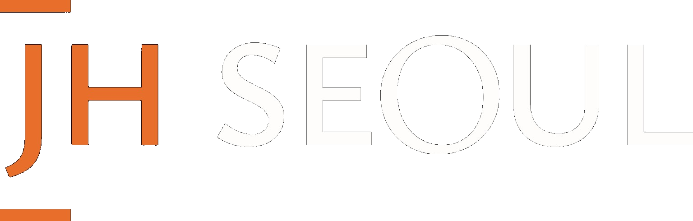
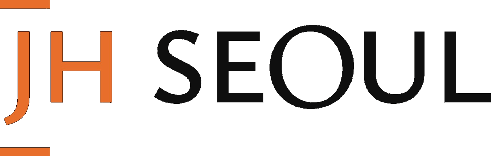
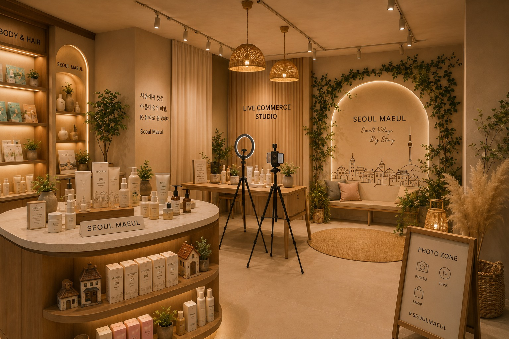
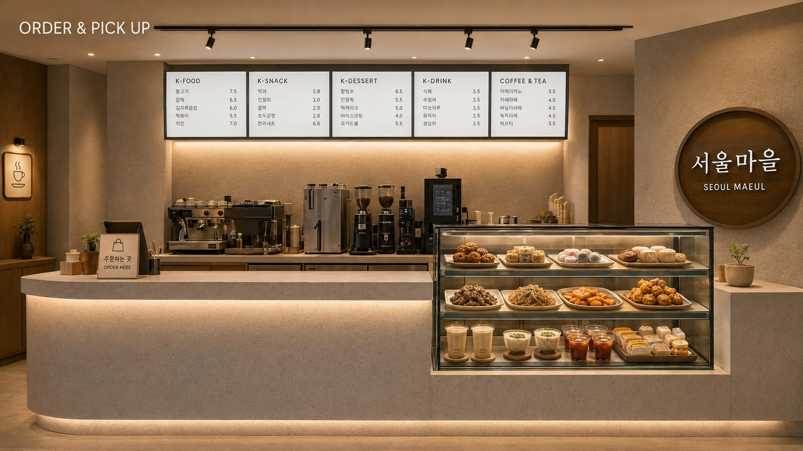
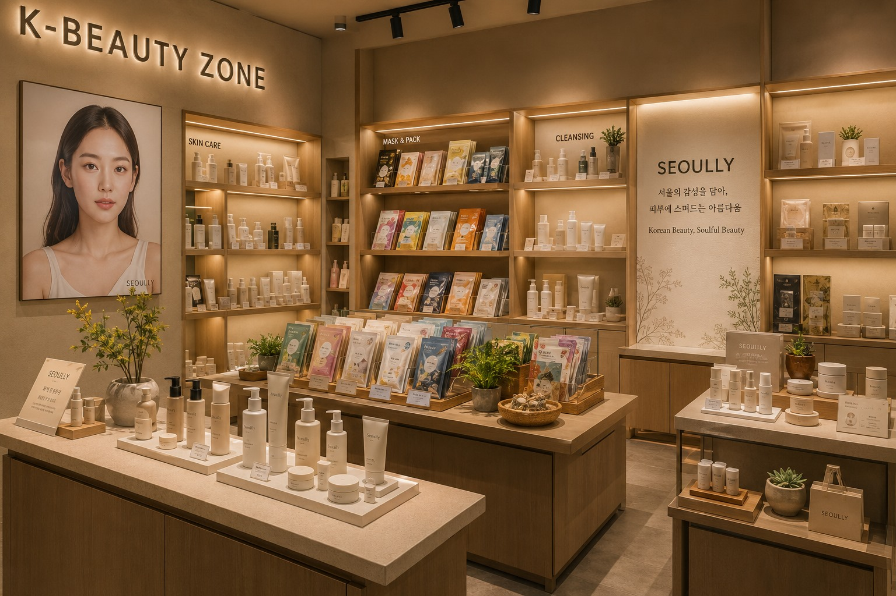
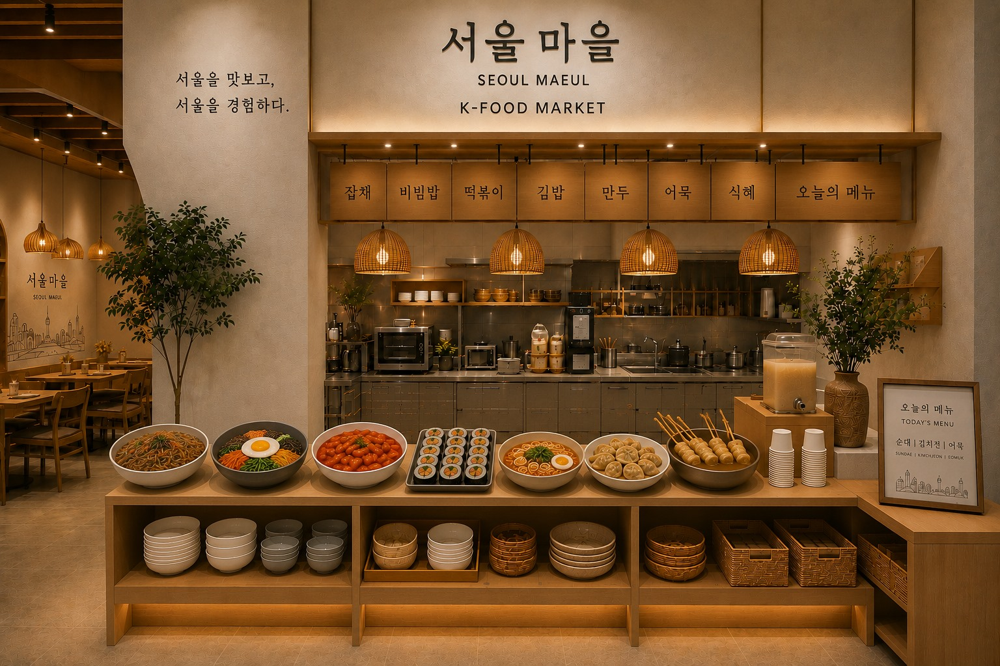
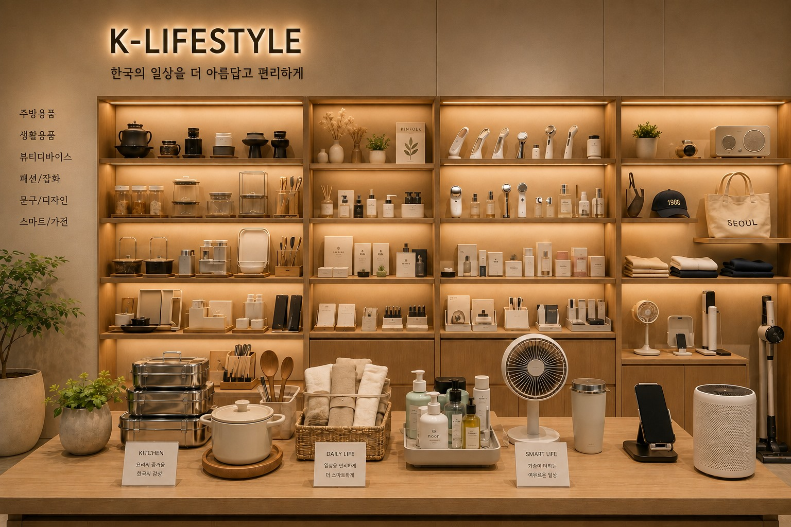

Discover
Find new Korean products and brands.



Seoul Maeul
Capturing Seoul's today,
into India's new everyday life.
About Seoul Maeul
Seoul Maeul is a global lifestyle platform that brings K-Beauty, K-Food, K-Café, and K-Lifestyle together in one space, connecting Korean sensibility and ways of living to everyday life in India.
Going beyond a simple retail space, it aims to complete the experience of discovering and choosing Korean products, and of staying and enjoying time, all within one space.

A New Seoul Experience
Rather than simply reproducing traditional Korean elements, we recompose the sophisticated sensibility and warm living culture of today's Seoul within a local space.


01 / K-Beauty
Skincare, beauty technology, product feel, and brand stories all come together in one space. This is a core area where future JH SEOUL products and curated Korean brands can be introduced together.

02 / K-Food
We introduce Korean food culture that's easy to access in everyday life, like ramyeon, ready meals, snacks, and ingredients. Rather than simple display, we focus on a layout that's easy and enjoyable to choose from.
03 / K-Café
A café space with drinks, desserts, and comfortable rest lets visitors naturally experience Korean café culture. It becomes the central space connecting the mood of all of Seoul Maeul.

04 / K-Lifestyle
We curate a variety of products that showcase Korean everyday life, from home goods and design products to beauty devices and smart living items.
One Space, Four Experiences
We design the flow of seeing beauty, choosing food, staying at the café, and discovering lifestyle products so it naturally connects within one space.
Find new Korean products and brands.
See and use them firsthand to experience Korean sensibility.
Stay comfortably within the food, café, and space.
Korean products and culture become part of a new everyday life in India.
Project Status
The current images are concept visuals showing the space's direction and mood. The actual layout and operation will take shape as the business progresses.